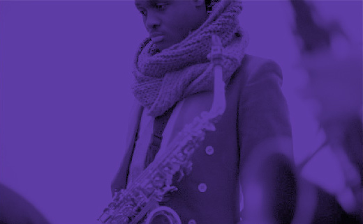
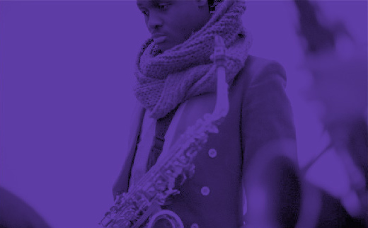
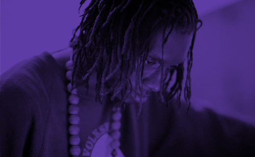
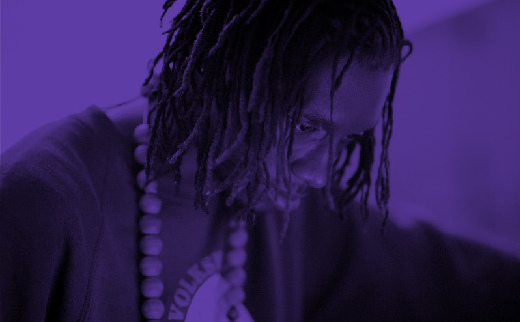

Drums
Chibike Odukwe
Sax
David Turay
Bass
Jamie Benzies
Electronics
Tile "D'Vo" Gichigi-Lipere
 

 

Psylus is a project consisting of four progressive, improvising
musicians, who blend jazz, hip-hop and electronic music with
modular and free improvisation, and an array of different textures
and styles. One feature prevalent in their music is cyclic
repetition. The forms, taken from the above styles, serve as
platforms for abstraction and musical evolution – free
improvisation that bursts at the seams, and pushes the boundaries
to the next level.
— RD, Young & Serious
Wednesday, 24 July 2013
Hootananny, London
Sunday, 7 July 2013
Brain Child, Canterbury
Tuesday, 13 November 2013
Southbank Centre, London
Thursday, 14 March 2013
Mau Mau Bar, London
Enquiries and Booking
dorota@psylus.co.uk
Social
facebook
twitter
soundcloud
youtube
Design
Studio Pancake
Code
Michal Koziarski
Photo/Video
Jordan Matyka